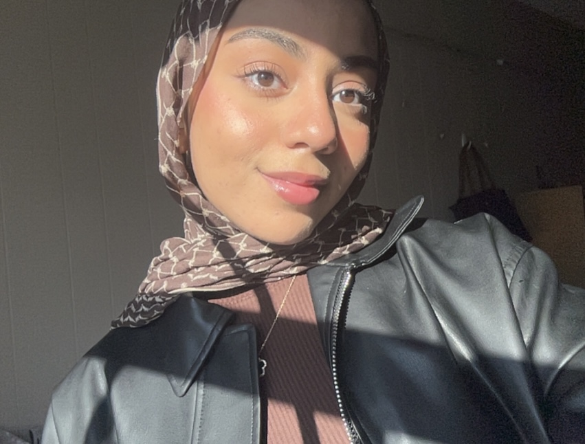
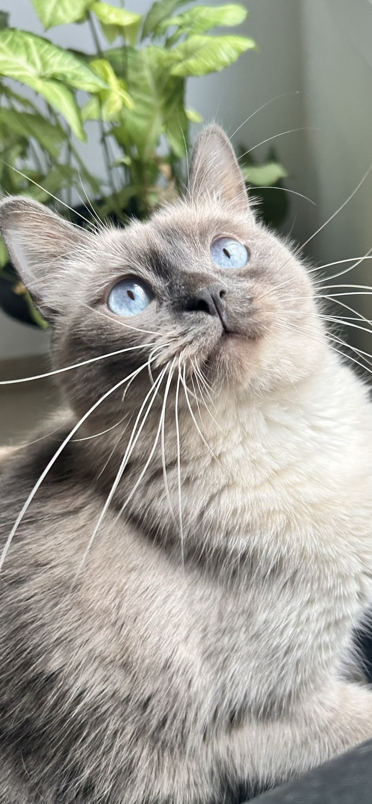
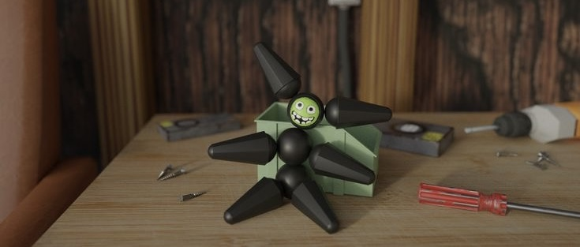
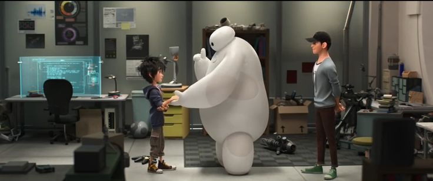

<div class="textcontainer">
<h3>About Me</h3>
<p class="margin"> </p>
<div class="center-row">

<p id="aboutme">
Hi! I'm Sara Alhamran, an 18 year old from Bahrain, and a rising senior in Tabor Academy. I am attending Harvard's Summer School Program to take Painting in Time and Digital Fabrication, which have been wonderful so far!
</p>
</div>
<br></br>
I love painting, taking photos, artificial intelligence and eating anything pistachio-flavoured. I have always been interested in engineering and art, which is why I picked this digital fabrication course. Here are some of my fav shots:
<br></br>

<br></br>
As a kid I was obsessed with the movie Big Hero 6, and this course kind of gave me Hiro/Tadashi Hamada vibes. I took some physics classes over the years, but they dealt more with theory rather than application, so I’m excited to use my knowledge in meaningful/artistic projects.
<br></br>


</div>